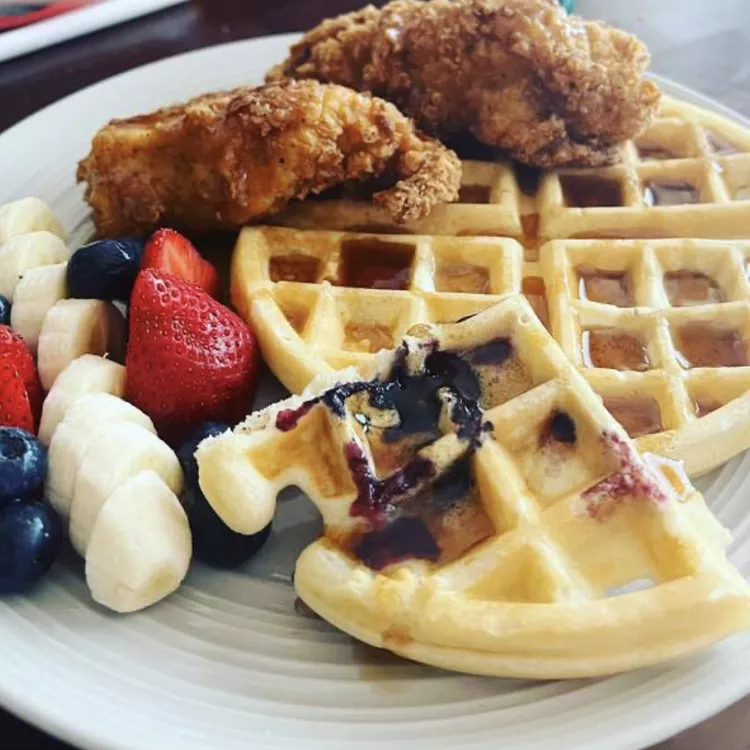

This waffle recipe is the only one you'll need to make homemade waffles with your waffle iron. Simple pantry ingredients mix up quickly in this easy batter that can be used right away or stored in the refrigerator for up to a week. Serve waffles hot with whipped cream and fresh fruit or with butter and maple syrup for either breakfast, brunch, or a snack.
Whisk together flour, cornstarch, salt, baking powder, and baking soda in a bowl.
Whisk together egg, sugar, butter, and vanilla in a separate large bowl until mixture is smooth. Whisk in half-and-half and buttermilk. Add flour mixture; stir until just combined and a few lumps remain. (Do not overmix.) Chill, covered, at least 1 hour or up to overnight.
Whisk together egg, sugar, butter, and vanilla in a separate large bowl until mixture is smooth. Whisk in half-and-half and buttermilk. Add flour mixture; stir until just combined and a few lumps remain. (Do not overmix.) Chill, covered, at least 1 hour or up to overnight.Preheat waffle iron to medium-high; lightly coat with cooking spray. Pour about 2/3 cup batter onto waffle iron. Cook until golden and crisp on edges, 4 to 6 minutes. Transfer to a plate; keep warm. Repeat with remaining batter.
Serve waffles with maple syrup, chocolate chips, and/or additional butter.